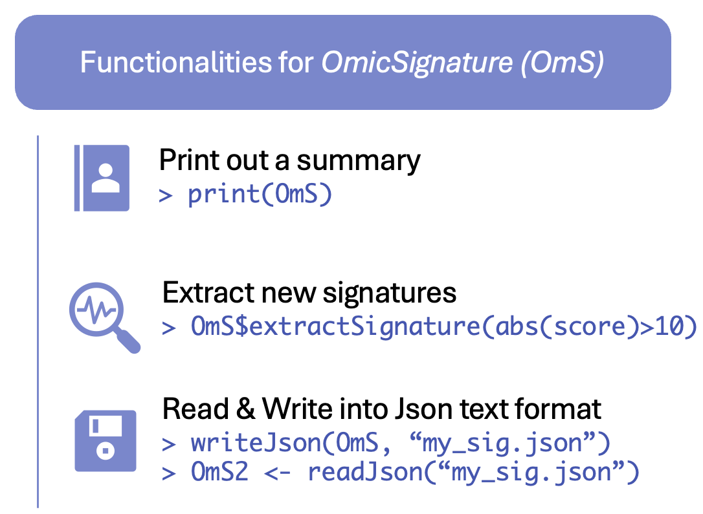

Functionalities of OmicSignature
Vanessa Mengze Li
2025-12-02
Source:vignettes/FunOmS.Rmd
FunOmS.Rmd
devtools::load_all(".")
Read an OmicSignature object from a json file
Alternatively, you can read and write the object in .rds
format as any other R objects.
OmS <- readJson(file.path(system.file("extdata", package = "OmicSignature"), "Myc_reduce_mice_liver_24m_OmS.json"))
#> [Success] OmicSignature object Myc_reduce_mice_liver_24m created.Write an OmicSignature object into a json file
writeJson(OmS, "Myc_reduce_mice_liver_24m_OmS.json")Print and see the metadata
OmS
#> Signature Object:
#> Metadata:
#> adj_p_cutoff = 0.05
#> assay_type = transcriptomics
#> author = vmli
#> description = mice MYC reduced expression
#> direction_type = bi-directional
#> keywords = Myc, KO, longevity
#> organism = Mus musculus
#> others = C57BL/6
#> phenotype = Myc_reduce
#> platform = transcriptomics by array
#> PMID = 25619689
#> sample_type = liver
#> score_cutoff = 5
#> signature_name = Myc_reduce_mice_liver_24m
#> year = 2015
#> Metadata user defined fields:
#> animal_strain = C57BL/6
#> Signature:
#> MYC reduce (5)
#> WT (10)
#> Differential Expression Data:
#> 884 x 10Extract new signatures from the OmicSignature
object
We can use new criterias to extract new signatures conveniently from
the OmicSignature Object, if it has difexp matrix
included.
For example, extract all features with a t-score with absolute value
higher than 5 and adj_p smaller than 0.01:
OmS$extractSignature("abs(score) > 5; adj_p < 0.01")
#> probe_id feature_name score group_label
#> 1 10349648 ENSMUSG00000004552 14.762 treatment
#> 2 10345762 ENSMUSG00000026072 -13.543 control
#> 3 10353192 ENSMUSG00000025932 10.487 treatment
#> 4 10355259 ENSMUSG00000061816 -10.315 control
#> 5 10351477 ENSMUSG00000102418 8.818 treatment